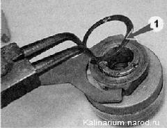

Ремонт стартера
В зависимости от возникшей неисправности, последовательность и объем ремонтных работ могут быть изменены.
Наиболее часто возникающие неисправности стартера:
1. Перегорает обмотка или подгорают контактные болты и контактная пластина в тяговом реле. Для устранения этих неисправностей необходимо заменить тяговое реле. Это можно сделать на автомобиле, не снимая стартер.
2. Неисправна обгонная муфта привода. Для устранения этой неисправности необходимо разобрать стартер и заменить привод.
3. Изношены; щетки стартера. Следует снять стартер, заменить щеточный узел и зачистить коллектор. При замене щеточного узла нет необходимости снимать привод стартера и тяговое реле.
Для выполнения работы потребуются:
— два силовых провода (с зажимами на концах) для запуска двигателя от аккумуляторной батареи другого автомобиля;
— съемник наружных стопорных колец;
— омметр.
Проверка
Проверить электрическую часть стартера можно, не разбирая его.
1. Снимаем стартер.
Выполняя проверку, не допускайте короткого замыкания зажима провода, соединенного с положительным выводом аккумуляторной батареи, на корпус стартера. Для этого зажим следует удлинить, например вставив в него стальную выколотку.
2. Одним проводом соединяем отрицательный вывод аккумуляторной батареи с корпусом стартера. Второй провод, соединенный с положительным выводом аккумуляторной батареи, подсоединяем к контактному болту 2 тягового реле, к которому подсоединен провод стартера. Если якорь стартера начнет вращаться, двигатель стартера исправен.
3. Подсоединяем второй провод к контактному болту 1 тягового реле. Используя отвертку или другой подходящий металлический предмет, замыкаем между собой вывод 3 и контактный болт тягового реле. Если раздался громкий щелчок и якорь стартера начал вращаться, значит, тяговое реле исправно.
Для дальнейшей проверки стартера, а также для определения причины неисправности необходимо разобрать стартер.
Разборка
1. Торцовым ключом на 10 мм отворачиваем гайку крепления наконечника провода к выводу (контактному болту) тягового реле.

2. Снимаем наконечник провода с контактного болта тягового реле.
3. Торцовым ключом на 8 мм отворачиваем два болта крепления тягового реле.
4. Снимаем тяговое реле со стартера (при этом необходимо отсоединить серьгу сердечника реле от верхнего конца рычага привода).
Проверьте легкость хода сердечника тягового реле. Подсоедините к выводам тягового реле омметр и, утапливая якорь до упора, убедитесь, что замыкаются контактные болты (электрическое сопротивление близко к нулю). Неисправное тяговое реле необходимо заменить.
5. Торцовым ключом на 10 мм отворачиваем две гайки стяжных шпилек.
6. Аккуратно отсоединив статор от передней крышки, снимаем статор со шиилек.
7. Снимаем центральную шестерню планетарного редуктора (иногда шестерня остается на валу якоря).
8. Поддевая шлицевой отверткой, поочередно снимаем три планетарные шестерни редуктора.
Проверьте состояние планетарного редуктора. Игольчатые подшипники сателлитных шестерен не должны быть повреждены. На зубьях шестерен редуктора не должно быть сколов, задиров, следов коррозии и других повреждений. Необходимо заменить неисправные элементы редуктора (либо привод или стартер в сборе).
9. Упираясь в верхнюю часть передней крышки стартера отверткой, поддеваем опору рычага привода.
10. Извлекаем из крышки привод вместе с валом привода, рычагом привода, опорой рычага и внешней шестерней редуктора.
Проверьте состояние привода. Привод должен свободно, без заедания, перемещаться по шлицам вала. Шестерня привода должна свободно проворачиваться только в одном направлении, недопустимы выкрашивание зубьев и сильные забоины на заходной части зубьев. Мелкие дефекты можно устранить алмазным надфилем или абразивным бруском. Необходимо заменить неисправный и сильно изношенный привод (либо стартер в сборе).
11. Молотком через рожковый ключ на 13 мм сбиваем кольцо ограничителя хода привода стартера (при этом под шестерню ред>'ктора следует подложить деревянный брусок или кусок плотной резины).
12. Шлицевой отверткой извлекаем из проточки вала стопорное кольцо ограничителя хода привода и снимаем с вала стопорное кольцо и кольцо ограничителя хода.
13. Снимаем с вала привод в сборе с рычагом и муфтой.

14. Съемником снимаем стопорное кольцо 1 муфты рычага привода.
15. Снимаем с привода 4 шайбу 2, муфту 5 в сборе с рычагом привода 3.
При замене только привода дальнейшие работы по разборке стартера можно не производить.
16. Съемником снимаем стопорное кольцо опоры вала привода.
17. С вала привода 1 последовательно снимаем упорную шайбу 5, опору вала 4, уплотнительное резиновое кольцо 3 и внешнюю шестерню планетарного редуктора 2
18. Крестовой отверткой отворачиваем два винта крепления шеточного узла к задней крышке стартера.
19. Снимаем заднюю крышку.
20. Поддев шлицевой отверткой, снимаем шеточный узел с коллектора якоря.

21. Снимаем переднюю опору вала якоря.
22. Снимаем с вала якоря упорную шайбу
.
23. Преодолевая усилие магнитов, вынимаем якорь из статора.
24. Осматриваем коллектор и обмотки якоря.
Следы обугливания обмоток не допускаются — такой якорь необходимо заменить.
25. Загрязненный коллектор зачишаем мелкозернистой наждачной бумагой, зажав вал якоря через полоску плотной бумаги в патрон электродрели. Промываем якорь водой с моюшим средством для удаления грязи, угольной пыли и остатков абразива и тшательно протираем чистой ветошью насухо, обдуваем сжатым воздухом от шинного насоса.
26. Заменяем изношенные шетки (высота от рабочей кромки до вывода равна или меньше 3,5 мм) и щетки, имеющие механические повреждения.
27. Промываем детали редуктора и привода уайт-спиритом или керосином.
Сборка
Установить шеточный узел на коллектор якоря стартера можно специальной оправкой или с помощью инструментальной головки подходящего размера и формы. В случае их отсутствия установить щетки можно без этих приспособлений. Для этого:
1) двумя винтами крепим шеточный узел к задней крышке стартера;
2) смазываем конец вала якоря двумя каплями моторного масла;
3) вставляем четыре щетки в соответствующие щеткодержатели. Пе вставляя в щеткодержатели пружины щеток, надеваем, щеточный узел на коллектор якоря;
4) плоскогубцами с тонкими губками отгибаем наружные упоры пружин всех четырех щеток;
5) вставляем в щеткодержатель пружину;
6) удерживая пружину отверткой, плоскотубпами загибаем четыре упора пружины. Таким же способом устанавливаем остальные три пружины;
7) вставляем в статор якорь стартера с надетыми на него щеточным узлом и задней крышкой (при этом необходимо придерживать якорь, чтобы его коллектор не вышел из зацепления со щеточным узлом).
Дальнейшую сборку стартера выполняем в последовательности, обратной разборке. При этом на детали редуктора наносим смазку ШРУС-4. Передустановкой привода окунаем его в моторное масло и даем маслу стечь. Втулки, в которых вращаются валы якоря и привода, а также винтовые шлицы привода смазываем моторным маслом;
8) чтобы убедиться в правильности сборки стартера, перед установкой проверяем его работоспособность. как это показано в начале раздела